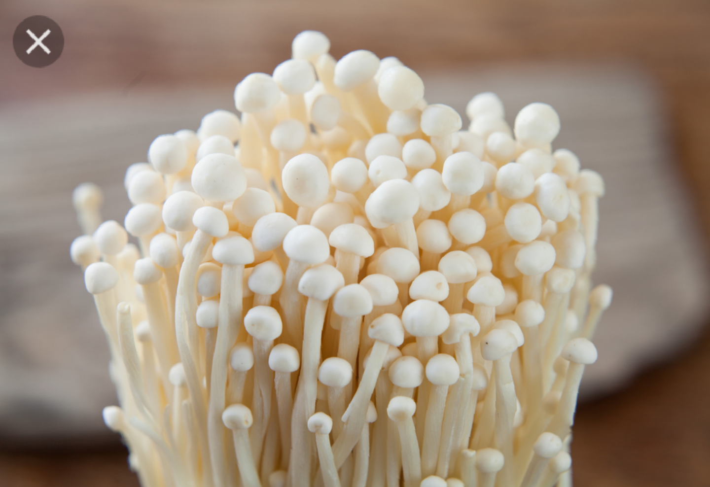
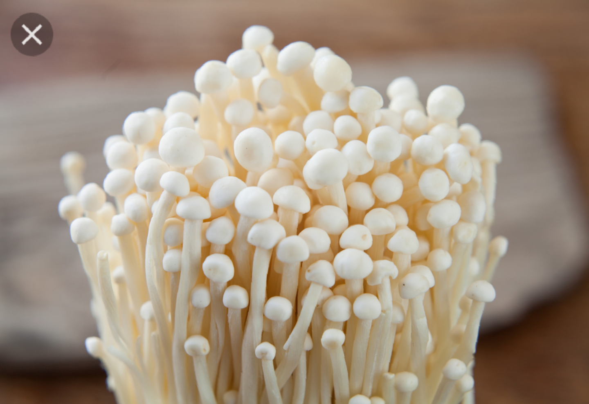

Type of mushrooms
curently there are over 10.000 known types of mushrooms. that may seem like a large number but mycologists suspect that this is only a fraction of what's out there! We can put this various species in one of the 4 catigories:Saprotrophic, Mycorhizal, Parasitic, and endophytic.

 



PRESERVATION. storing the mushrooms in glass jars with airtight lids is a good option, but you can also store them in airtight zipper bags.place the vessel in a cool, dark place and they'll stay goood for 6months to 1year. To rehydrate them, pour warm water over the mushrooms and let them soak for 20 to 30 miuntes. It can still be preserved local by salting and drying.
go to page4
go to home page